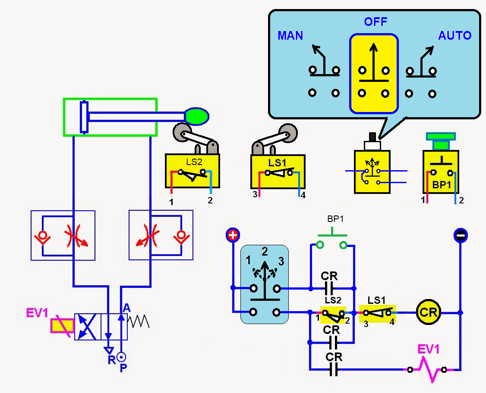

Seleccion de componentes para ensamble de equipo de computo.
Para regresar al inicio,da click aqui
3.1 CHIP SET
Un conjunto de chips es un conjunto de componentes electrónicos en un circuito integrado
que gestiona el flujo de datos entre el procesador, la memoria y los dispositivos periféricos.
Por lo general se encuentra en la placa base de un ordenador. Chipsets generalmente están diseñados para trabajar
con una familia específica de los microprocesadores. Debido a que controla las comunicaciones entre el procesador
y los dispositivos externos, el chipset tiene un papel crucial en la determinación del rendimiento del sistema.
3.1.1 UNIDAD DE PROCESAMIENTO
La Unidad Central de Procesamiento (del inglés: Central Processing Unit, CPU) oprocesador,
es el componente principal del ordenador y otros dispositivos programables, que interpreta las instrucciones
contenidas en los programas y procesa los datos. Las CPU proporcionan la característica fundamental del ordenador
digital (laprogramabilidad) y son uno de los componentes necesarios encontrados en losordenadores de
cualquier tiempo, junto con la memoria principal y los dispositivos deentrada/salida. Se conoce como microprocesador
el CPU que es manufacturado concircuitos integrados.
3.1.2 CONTROLADOR DEL BUS
Encargado de gestionar la memoria RAM, los puertos gráficos (AGP) y el acceso al resto de
componentes del chipset, así como la comunicación entre estos y el procesador. Los primeros Northbridge también
gestionaban los accesos a los puertos PCI, pero ha pasado con el tiempo a depender del Southbridge.
A destacar en este aspecto la innovación que supuso (y supone) la tecnología utilizada por AMD, en la que la memoria
es gestionada directamente por el procesador, descargando al Northbridge de esta labor y permitiendo una gestión de la memoria más rápida y directa
3.1.3 PUESTAS DE ENTRADA Y SALIDA
La entrada y salida o E/S (en inglés input/output o I/O), es la comunicación entre un sistema
de procesamiento de información, tal como un ordenador, y el mundo exterior u otro sistema de procesamiento de
información. Los dispositivos de E/S son utilizados por una persona (u otro sistema) para comunicarse con un ordenador.
3.1.4 CONTROLADOR DE INTERRUPCIONES
Interrupción ,interrupción hardware o petición de interrupción es una señal recibida por el
procesador de un ordenador, indicando que debe "interrumpir" el curso de ejecución actual y pasar a ejecutar código específico para tratar esta situación.
Una interrupción supone la ejecución temporaria de un programa, para pasar a ejecutar una "subrutina de servicio de interrupción",
que pertenece al BIOS .
Las interrupciones surgen de las necesidades que tienen los dispositivos periféricos de enviar información al procesador
principal de un sistema de computación. La primera técnica que se empleó fue que el propio procesador se encargara de
sondear el dispositivo cada cierto tiempo para averiguar si tenía pendiente alguna comunicación para él. Este método
presentaba el inconveniente de ser muy ineficiente, ya que el procesador constantemente consumía tiempo en realizar todas las instrucciones de sondeo.
3.1.5 CONTROLADOR DE ACCESO DIRECTO A MEMORIA
El controlador DMA descarga las entradas y salidas de datos en periféricos rápidos, ya que el uso de
interrupciones se vuelve inadecuado en estos casos. La CPU programa al controlador de DMA, indicando las direcciones de
memoria que deben emplear y el tipo de transferencia. Cuando un periférico solicita transferencia de datos mediante DMA,
el controlador se lo hace saber al procesador para que dé el visto bueno y acceda a la transferencia usando los buses del sistema.
3.1.6-7 CIRCUITOS DE TEMPORIZACION Y CONTROL
El circuito electrónico que más se utiliza tanto en la industria como en circuitería comercial, es el circuito
temporizador o de retardo, dentro de la categoría de temporizadores, cabe destacar el más económico y también menos preciso
consistente en una resistencia y un condensador, a partir de aquí se puede contar con un sinfín de opciones y posibilidades.
Como se ha mencionado anteriormente un temporizador básicamente consiste en un elemento que se activa o desactiva después
de un tiempo más o menos preestablecido. De esta manera podemos determinar el parámetro relacionado con el tiempo que ha
de transcurrir para que el circuito susceptible de temporizarse, se detenga o empiece a funcionar o simplemente cierre un contacto o lo abra.
3.1.8 CONTROLES DE VIDEO
Tambien llamada tarjeta gráfica, tarjeta de vídeo, placa de vídeo, tarjeta aceleradora de gráficos o
adaptador de pantalla, es una tarjeta de expansión para una computadora u ordenador, encargada de procesar los datos provenientes
de la CPU y transformarlos en información comprensible y representable en un dispositivo de salida, como un monitor o televisor.
Las tarjetas gráficas más comunes son las disponibles para las computadoras compatibles con la IBM PC, debido a la enorme
popularidad de éstas, pero otras arquitecturas también hacen uso de este tipo de dispositivos.
3.2 APLICACIONES
Las computadoras electrónicas modernas son una herramienta esencial en muchas áreas: industria, gobierno, ciencia, educación,…,
en realidad en casi todos los campos de nuestras vidas.
El papel que juegan los dispositivos periféricos de la computadora es esencial; sin tales dispositivos ésta no sería totalmente útil.
A través de los dispositivos periféricos podemos introducir a la computadora datos que nos sea útiles para la resolución de algún
problema y por consiguiente obtener el resultado de dichas operaciones, es decir; poder comunicarnos con la computadora.
La computadora necesita de entradas para poder generar salidas y éstas se dan a través de dos tipos de dispositivos periféricos existentes:
• Dispositivos periféricos de entrada.
• Dispositivos periféricos de salida.
La serie MVP es la familia más versátil de fuentes de alimentación de potencia media que utiliza componentes magnéticos
de SMD y convertidos DC-DC internos, combinados con módulos PFC, que pueden ser configurables desde 1 hasta 10 tensiones
de salida con valores entre 2 y 60 v. tiene todas las homologaciones de seguridad necesarias y es un producto marcado “CE”.
3.2.1 ENTRADA/SALIDA
Se trata de la interconexión entre sistemas digitales secuenciales y combinacionales. La operación
de los periféricos debe sincronizarse con la operación de la CPU y de la unidad de memoria, estableciendo un control
sobre la transferencia de la información. Cualquiera sea la forma de controlar la transferencia de información externa
la interconexión física puede ser: paralelo o serie.
3.2.2 ALMACENAMIENTO
Un soporte o medio de almacenamiento de datos es aquel donde se puede almacenar todo tipo de información,
resguardamos información en el disco duro. El software se conserva en la “Unidad C” O “Disco local C”, los datos se guardan
en los Documentos. También podemos hacer uso de dispositivos de almacenamiento secundarios como: discos duros, CD, DVD, memorias USB.
Los dispositivos de almacenamiento secundarios pueden dañarse más fácilmente y lograr que perdamos nuestros datos,
la información debe respaldarse. Una alternativa de respaldo es copiar nuestros archivos a otro dispositivo.
Expertos recomiendan respaldar únicamente nuestros datos, copiar todo el contenido de documentos.
La capacidad de almacenamiento se mide en bytes, MB, o TB. Necesitas respaldar la información con anterioridad
y verificar el espacio requerido para almacenar.
3.2.3 FUENTES DE ALIMENTACION
una fuente de alimentación es un dispositivo que convierte la corrientealterna, en una o varias
corrientes continuas, que alimentan los distintos circuitos delaparato electrónico al que se conecta
(ordenador, televisor, impresora, router, etc.).
3.2.1 ENTRADA/SALIDA
Se trata de la interconexión entre sistemas digitales secuenciales y combinacionales. La operación
de los periféricos debe sincronizarse con la operación de la CPU y de la unidad de memoria, estableciendo un control
sobre la transferencia de la información. Cualquiera sea la forma de controlar la transferencia de información externa
la interconexión física puede ser: paralelo o serie.
3.2.1 ENTRADA/SALIDA
Se trata de la interconexión entre sistemas digitales secuenciales y combinacionales. La operación
de los periféricos debe sincronizarse con la operación de la CPU y de la unidad de memoria, estableciendo un control
sobre la transferencia de la información. Cualquiera sea la forma de controlar la transferencia de información externa
la interconexión física puede ser: paralelo o serie.
3.3 AMBIENTES DE SERVICIO
El negocio de proveer servicios de datos es mucho más complejo que la forma en la que se dan los
tradicionales servicios, que con frecuencia se terminan involucrando o necesitando la colaboración de terceras empresas.
• Desarrollo de nuevos mercados y productos
• Adquisición y administración de clientes
• Proveer y desarrollar servicios para la red
• Administración del negocio
3.3.1 NEGOCIOS
La tecnología en general ha sido la causa principal y la acción más directa para la transformación
del trabajo de las organizaciones en la posguerra del siglo XX. Tanto los bienes de capital «duros»
(computadores, teléfonos, videos, facsímiles, grabadoras, etc.), como los programas y sistemas de información y comunicación en general,
han incrementado enormemente la productividad y eficiencia de las organizaciones.
3.3.2 INDUSTRIAL
La industrialización de los servicios de tecnología de información va a redefinir el mercado
en términos de como las organizaciones evalúan, compran y seleccionan los servicios y como los vendedores desarrollan
y establecen precios de los servicios. Para lograr esta estandarización, se requiere un enfoque hacia las soluciones
genéricas y esto debe ser responsabilidad de los proveedores, que deben de desarrollar, operar y administrar el
resultado de estos genéricos de TI. Aunque los servicios de TI están en proceso de madurez, la madurez de la industria
se ha incrementado en aspectos evidentes, como la forma en que los servicios son implementados y administrados.
3.3.3 COMERCIO ELECTRONICO
El desarrollo de estas tecnologías y de las telecomunicaciones ha hecho que los intercambios de datos
crezcan a niveles extraordinarios, simplificándose cada vez más y creando nuevas formas de comercio, y en este marco se
desarrolla el Comercio Electrónico. Se considera “Comercio Electrónico” al conjunto de aquellas transacciones comerciales
y financieras realizadas a través del procesamiento y la transmisión de información, incluyendo texto, sonido e imagen.
